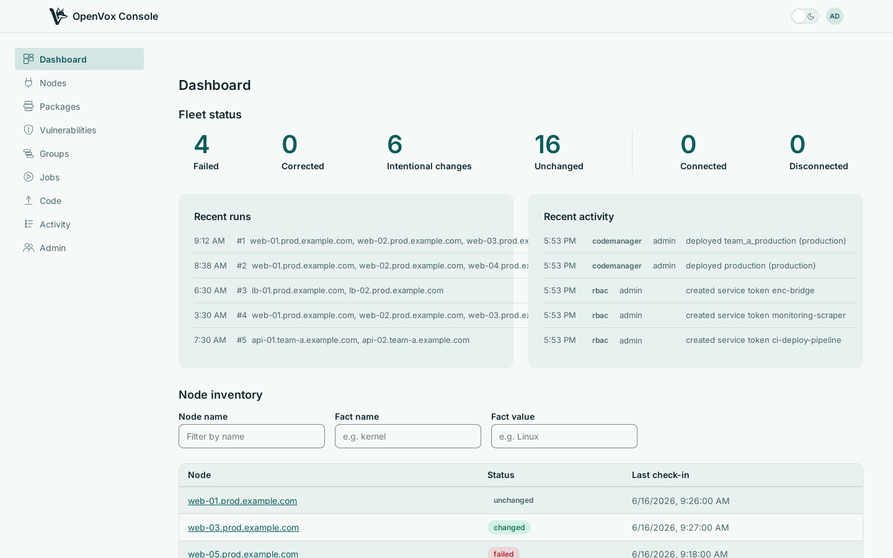

See every node, decide what runs where, deploy your code, and act on what comes back. A Puppet Enterprise console for OpenVox — one Go binary, on top of the openvox-server and openvoxdb you already run.

What it does
Every page below shows the console itself, captured from a running instance.
One binary to run
The console, access control, classification, orchestration and code deployment are one process. There is nothing to wire together, no internal services to keep in step, and one thing to upgrade.
It sits on top of the stack you already have. openvox-server still compiles catalogs and runs the CA; openvoxdb still stores facts and reports. Your agents carry on talking to exactly what they talk to now — the console serves the standard ENC contract, so there is nothing to change on the node side.
docker compose up brings up openvoxserver, openvoxdb,
Postgres and the console together, so you can point a test agent at it
and see your own nodes appear before committing to anything.
OpenVox Console ships as two container images, built for amd64 and
arm64 on every push. SETUP.md walks through a real
deployment - openvoxserver, openvoxdb, Postgres and the console -
with both container and package instructions.